library(DESeq2)
library(ggplot2)
library(ggrepel)
# Import the original data
count_data <- as.matrix(
read.csv(
"m_sample_counts.csv",
row.names = 1,
check.names = FALSE
)
)
sample_info <- read.csv(
"m_sample_info.csv",
row.names = 1,
check.names = FALSE
)
sample_info <- sample_info[
colnames(count_data),
,
drop = FALSE
]
sample_info$status <- factor(sample_info$status)
# Sample-level summary
sample_summary <- data.frame(
sample_id = colnames(count_data),
status = sample_info$status,
total_counts = colSums(count_data),
detected_genes = colSums(count_data > 0)
)
# Long-format count data
count_plot_data <- stack(
as.data.frame(log2(count_data + 1))
)
colnames(count_plot_data) <- c(
"log2_count",
"sample_id"
)
# Load the fitted DESeq2 object
dds_fitted <- readRDS(
"objects/dds_fitted.rds"
)
# HAT-versus-SERO result
res_hat_vs_sero <- results(
dds_fitted,
contrast = c("status", "hat", "sero"),
alpha = 0.05
)
result_data <- data.frame(
gene_id = rownames(res_hat_vs_sero),
as.data.frame(res_hat_vs_sero),
row.names = NULL
)
# Add gene symbols
annotation_data <- read.csv(
"human_annotations_from_orgHs.csv",
check.names = FALSE,
stringsAsFactors = FALSE
)
symbol_column <- if (
"SYMBOL_SAFE" %in% colnames(annotation_data)
) {
"SYMBOL_SAFE"
} else {
"SYMBOL"
}
result_data$symbol <- annotation_data[[symbol_column]][
match(
result_data$gene_id,
annotation_data$ENSEMBL
)
]
missing_symbol <- is.na(result_data$symbol) |
result_data$symbol == ""
result_data$symbol[missing_symbol] <-
result_data$gene_id[missing_symbol]
# Volcano-plot data
plot_de <- result_data[
!is.na(result_data$padj),
]
plot_de$minus_log10_padj <-
-log10(plot_de$padj)
plot_de$direction <- "Below thresholds"
plot_de$direction[
plot_de$padj < 0.05 &
plot_de$log2FoldChange > 1
] <- "Higher in HAT"
plot_de$direction[
plot_de$padj < 0.05 &
plot_de$log2FoldChange < -1
] <- "Higher in SERO TL+"
# VST data for the single-gene plot, PCA and distances
vsd <- vst(
dds_fitted,
blind = FALSE
)
selected_samples <- rownames(sample_info)[
sample_info$status %in% c("hat", "sero")
]
selected_vsd <- vsd[
,
selected_samples
]
selected_vst <- assay(selected_vsd)
# PCA data
pca_data <- plotPCA(
selected_vsd,
intgroup = "status",
ntop = 500,
returnData = TRUE
)
pc1_percent <- round(
100 * attr(pca_data, "percentVar")[1],
1
)
pc2_percent <- round(
100 * attr(pca_data, "percentVar")[2],
1
)
# Sample-distance data
sample_dist_matrix <- as.matrix(
dist(t(selected_vst))
)
distance_data <- as.data.frame(
as.table(sample_dist_matrix)
)
colnames(distance_data) <- c(
"sample_1",
"sample_2",
"distance"
)
# Recreate the original plot objects
read_plot <- ggplot(
sample_summary,
aes(x = sample_id, y = total_counts)
) +
geom_col() +
coord_flip()
count_distribution_plot <- ggplot(
count_plot_data,
aes(x = sample_id, y = log2_count)
) +
geom_boxplot() +
coord_flip()
distance_plot <- ggplot(
distance_data,
aes(
x = sample_1,
y = sample_2,
fill = distance
)
) +
geom_tile() +
scale_fill_viridis_c() +
coord_equal()
volcano_plot <- ggplot(
plot_de,
aes(
x = log2FoldChange,
y = minus_log10_padj,
colour = direction
)
) +
geom_point()
pca_plot <- ggplot(
pca_data,
aes(
x = PC1,
y = PC2,
colour = group
)
) +
geom_point()9 Customising Data Visualisations
9.1 What you’ll learn
In earlier chapters, you deliberately created simple figures so that you could focus on the analysis. In this chapter, you will return to those plots and improve them in your original analysis script. This keeps the session practical: you already understand what each figure represents, so the new focus is how to communicate the result clearly.
NoteLearning outcomes
By the end of this chapter, you should be able to:
- explain why titles, axis labels, legends, readable text and colour choices affect the clarity and accessibility of a figure;
- identify the data, aesthetic mappings and geometry used in a
ggplot2figure; - distinguish between mapping a variable inside
aes()and setting an appearance outsideaes(); - use
labs(), manual colour scales and built-in themes to improve a plot; - adjust features that are specific to particular geometries, such as point size in
geom_point()and the fill scale ofgeom_tile(); - add a small number of informative gene labels to a volcano plot;
- apply the same principles to figures already present in your own script.
You do not need to memorise every option. The essential pattern is:
- make the message clear;
- label the figure properly;
- make important features easy to see;
- use colour consistently and accessibly.
ISCB alignment: D3 (select and refine visual representations appropriate to different RNA-seq results), E3 (update analysis scripts and save clearly labelled figures using reproducible filenames and dimensions), H3 (use ggplot2 mappings, geometries, scales, themes and annotation layers to customise figures in R), K3 (communicate results through clear, accessible figures, legends and reproducibly selected labels).
We will continue using the ggplot2 objects we made previously. These should already be available in your R environment so you do not need to create them again.
TipRecap: If the objects are not available
9.2 Why improve a default plot?
A default plot is useful while exploring data, but a reader should not have to inspect your R code to understand a finished figure. A clear figure should answer four immediate questions:
- What is this figure about? The title should state the comparison or purpose.
- What does each axis represent? Axis labels should use readable words and include transformations or units where relevant.
- What do the colours or shapes mean? A plot legend should describe the biological categories rather than expose an R variable name.
- What should the reader notice? Point size, contrast and selective annotation should make the data legible without adding unnecessary decoration.
Clarity is also an accessibility issue. Small text, low contrast, crowded labels and colour-only distinctions can prevent readers from using a figure. The University of Glasgow Digital Accessibility Guidelines recommend clear structure, readable type, meaningful descriptions, suitable colour contrast and avoiding colour as the only way of conveying meaning. The aim is not to make every plot elaborate. It is to remove avoidable barriers.
ImportantAccessible figures
For figures in reports and presentations:
- use titles and labels that make sense without the R code;
- use a readable text size;
- use sufficient contrast;
- avoid relying on red versus green alone;
- where practical, combine colour with position, shape, labels or written interpretation;
- describe the important pattern in the surrounding text or figure caption;
- keep the design consistent across related figures.
9.3 Continue in your original script
Open the R script you have been working on during Chapters 2 to 6. Find each original plotting section and improve the code there. Save the script regularly.
Load the packages used in this chapter:
library(ggplot2)
library(ggrepel)9.4 Building a ggplot2 figure
We will begin by plotting the expression of IRF8, the gene with the smallest adjusted p-value in our earlier differential-expression analysis. Its Ensembl gene ID is ENSG00000140968.
First, we will use the Ensembl gene ID to select the IRF8 expression values, then combine them with the clinical group for each sample:
gene_data <- data.frame(
expression = selected_vst["ENSG00000140968", ],
status = sample_info[
colnames(selected_vst),
"status"
]
)
head(gene_data) expression status
h1.1 11.32466 hat
h1.2 11.20217 hat
h1.3 11.62455 hat
h1.5 11.54062 hat
h2.2 11.93360 hat
h2.3 11.74337 hatThis is similar to how we constructed sample_summary in Chapter 2. The new data frame contains:
expression, containing the expression ofENSG00000140968in each sample;status, containing the clinical group of each sample.
Each row of gene_data represents one sample.
A ggplot2 figure needs three main pieces:
- a data frame;
- columns to place on the axes;
- a way to draw each observation.
We can plot out the VST expression of ENSG00000140968 for HAT and SERO TL+ using:
gene_plot <- ggplot(
gene_data,
aes(
x = status,
y = expression
)
) +
geom_point()
gene_plot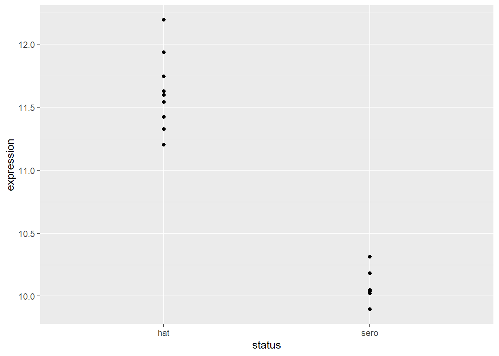
We can interpret this code as:
Use gene_data, place status on the x-axis, place expression on the y-axis, and draw each sample as a point.
In the code:
ggplot(gene_data)selects the data;aes(x = status, y = expression)connects columns in the data to the axes;geom_point()draws one point for each row;<-stores the figure asgene_plot;- typing
gene_plotdisplays it.
The instructions inside aes() are called aesthetic mappings. They connect columns in the data to visual features of the plot. Here, the status column controls horizontal position and the expression column controls vertical position.
9.4.1 Make the individual samples visible
In this simple figure, samples in the same group have the same horizontal position so some points may overlap. We can replace geom_point() with geom_jitter() to spread them slightly from side to side to avoid this:
gene_plot <- ggplot(
gene_data,
aes(
x = status,
y = expression
)
) +
geom_jitter(
width = 0.08,
size = 3,
colour = "blue"
)
gene_plot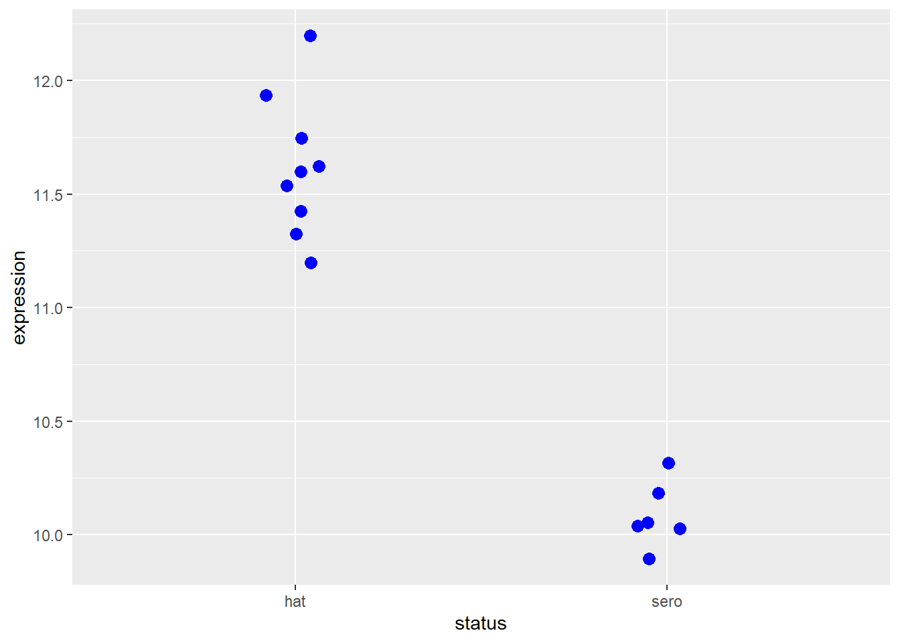
The x and y positions still come from columns in gene_data. The arguments inside geom_jitter() are fixed settings that control how the points are drawn. We can change these settings to improve the readability of the plot:
width = 0.08controls how far the points can move horizontally;size = 3makes every point larger;colour = "blue"makes every point blue.
9.4.2 Add a summary layer and clear labels
A ggplot2 figure can contain several layers. We can add a boxplot to summarise each group while retaining the points for the individual samples:
gene_plot <- ggplot(
gene_data,
aes(
x = status,
y = expression
)
) +
geom_boxplot(
width = 0.55,
outlier.shape = NA,
colour = "grey35"
) +
geom_jitter(
width = 0.08,
size = 3,
colour = "blue"
) +
labs(
title = "Expression of IRF8",
x = "Clinical group",
y = "Variance-stabilised expression"
)
gene_plot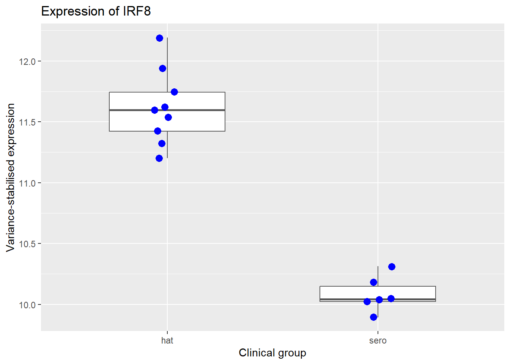
The two layers have different roles:
geom_boxplot()summarises the distribution within each group;geom_jitter()shows the individual samples.
At this stage, colour is a fixed setting. Every point is blue. We will introduce mapping a data column to colour when we reach the PCA, where colour adds information that is not already shown on an axis.
9.4.3 Colour names and hexadecimal codes
R recognises many colour names. These are a small selection:
"red"
"blue"
"orange"
"purple"
"black"
"grey"
"darkgreen"
"steelblue"Colour names are a clear starting point. You can also use a hexadecimal (hex) colour code when you want a precise shade:
colour = "#0072B2"The R colour-name and hexadecimal-code reference shows the colours available in R alongside their names and hex colour codes.
ImportantChoose colours that remain distinguishable
Avoid relying on similar colours or a red-green combination to distinguish important groups. These can be difficult to distinguish for people with some forms of colour-vision deficiency or other visual impairments. Use colours with clear contrast, and have clear axis labels, plot legends or other information so that colour is not the only way to identify the groups.
9.4.4 Adding clear labels
A reader should also be able to identify what the figure shows and what each axis represents.
The labs() function adds labels to a ggplot2 figure:
labs(
title = "Expression of IRF8",
x = "Clinical group",
y = "Variance-stabilised expression"
)Here:
titledescribes what the figure shows;xprovides a clear label for the x-axis;yidentifies the measurement shown on the y-axis.
These labels replace the original column names, status and expression, with wording that is more meaningful to a reader.
Good labels should:
- describe the data rather than expose the R column names;
- state any transformation or normalisation where relevant;
- include measurement units where appropriate;
- remain short enough to read easily.
For example, "Variance-stabilised expression" is more informative than "expression" because it tells the reader that the expression values have been transformed.
NoteTitles, plot legends and figure legends
These parts of a figure have different purposes:
- the title states what the figure is about
- the axis labels explain the variables or measurements
- the plot legend, or key, explains colours, shapes or other visual features
- the figure legend, or caption, provides the information needed to interpret the complete figure
They should work together rather than repeat exactly the same information.
9.5 Compare built-in themes
We can also improve our figures by using a theme. A theme changes the background, grid lines, axes and text used by a ggplot2 figure all at the same time. It does not change the data or the variables shown.
Compare three built-in themes:
gene_plot + theme_bw()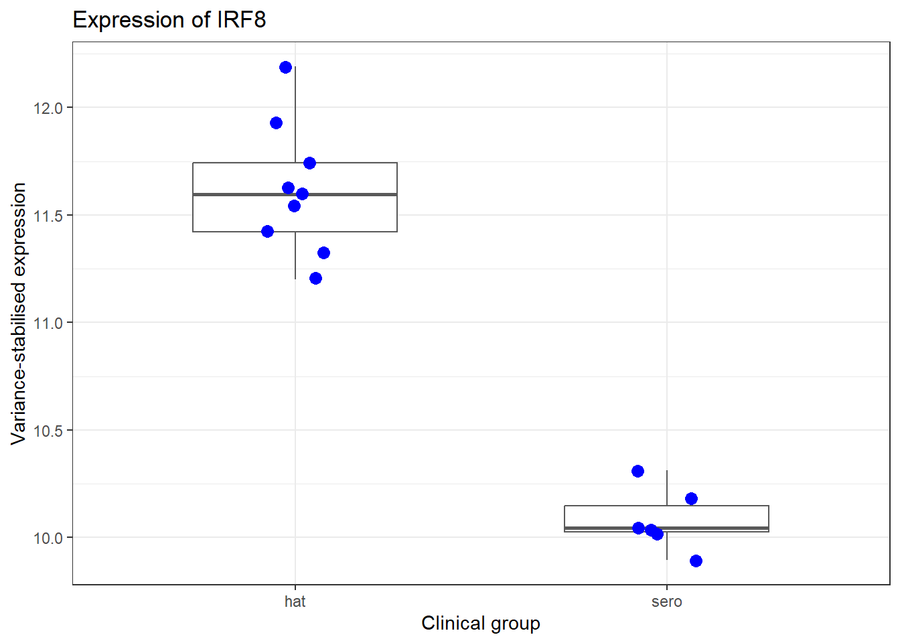
gene_plot + theme_classic()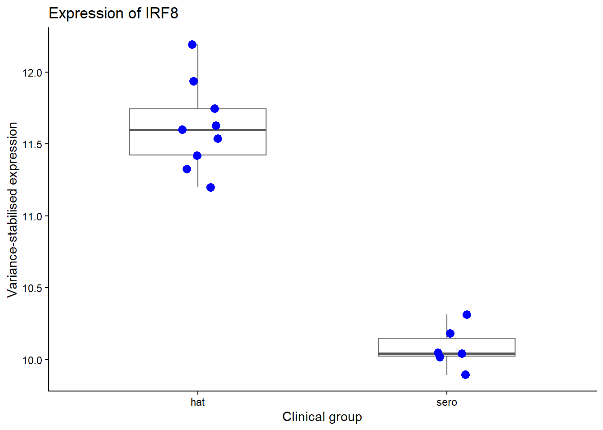
gene_plot + theme_minimal()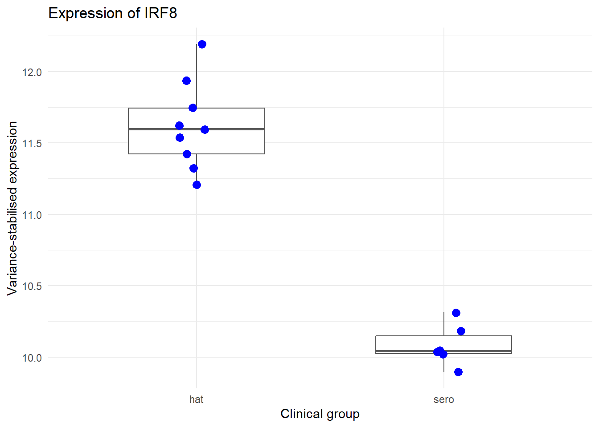
When we look at the different figures:
- Which version makes the data easiest to see?
- Are the grid lines helpful or distracting?
- Are the axes and labels clear?
- Which theme has the least unnecessary visual clutter?
There is no single best theme for every figure. Choose one that keeps the data clear and suits the purpose of the plot.
You can also use the base_size argument inside a theme function to control the general text size used by the theme.
For the worked examples in this chapter, we will use theme_classic(base_size = 12) as this is generally readable by most people.
gene_plot <- gene_plot +
theme_classic(base_size = 12)
gene_plot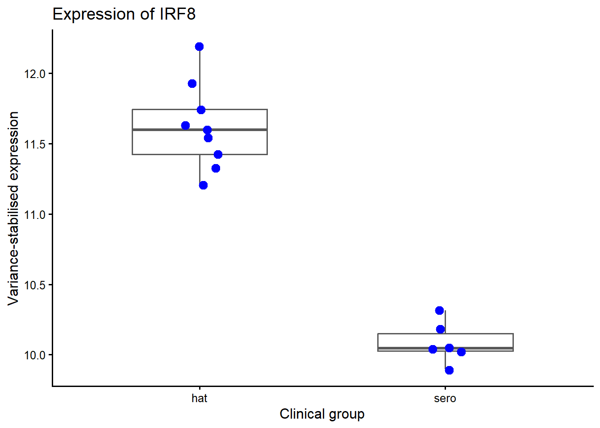
9.6 Figure legends
A figure legend, sometimes called a figure caption, is the short description placed underneath a figure. It should allow a reader to understand the figure without needing to inspect the R code.
A useful figure legend should briefly explain:
- what is being shown
- what each point, bar, box or tile represents
- the groups or comparison being made
- any transformation or important threshold
- the main visual encodings, such as colour or shape
A figure legend is different from the plot legend, or key, that appears inside or beside a plot. The plot legend explains visual features such as colours and shapes. The figure legend explains the figure as a whole. Typically, legends have a short title that precedes the legend itself.
For example, for the single-gene expression plot we could write:
Expression of IRF8 in HAT and SERO TL+ samples. Each point represents the variance-stabilised expression value for one sample. Boxes summarise the distribution within each clinical group.
We will practice writing legends to describe our figures as we work through the session.
9.7 Improve the total-count bar chart
Return to the read_plot code in your original script. The default column names sample_id and total_counts are useful in code, but they are not polished figure labels.
read_plot <- ggplot(
sample_summary,
aes(x = sample_id, y = total_counts)
) +
geom_col() +
coord_flip()
read_plot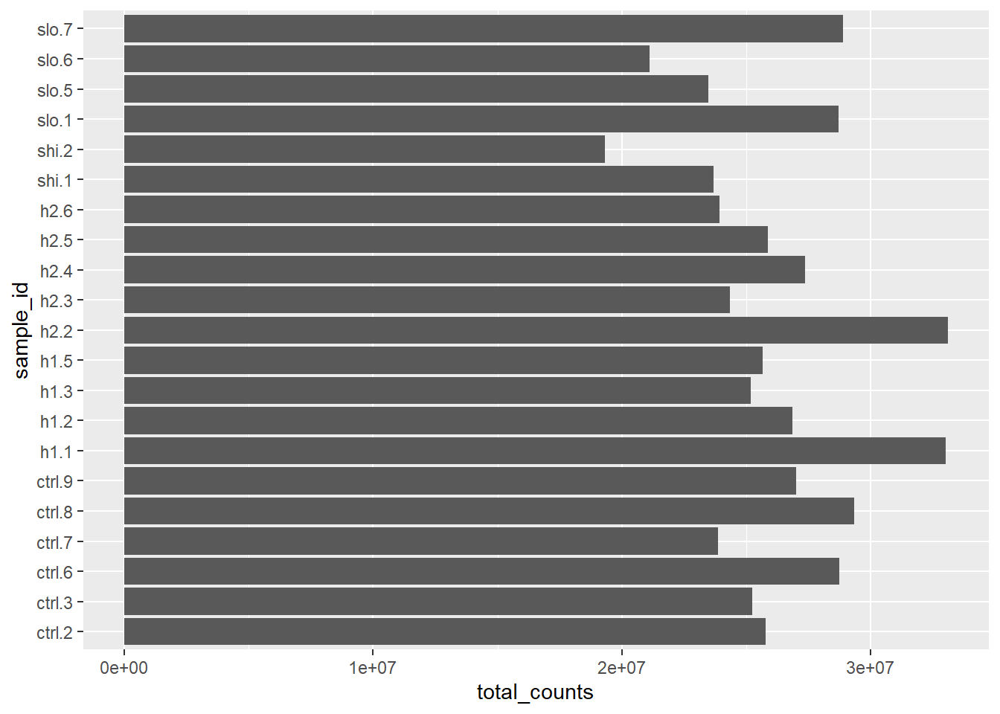
First, we can add a title and axis labels:
read_plot <- ggplot(
sample_summary,
aes(x = sample_id, y = total_counts)
) +
geom_col() +
coord_flip() +
labs(
title = "Total RNA-seq counts for each sample",
x = "Sample",
y = "Total counts"
)
read_plot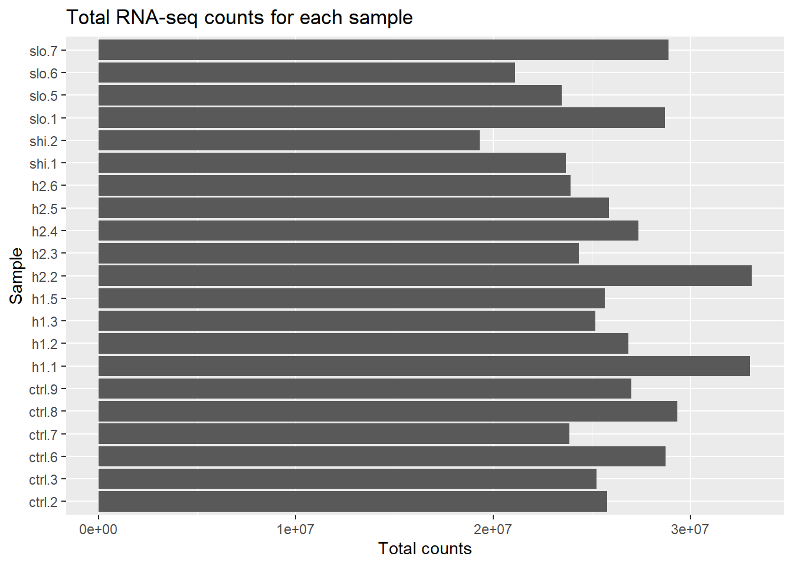
The title states the purpose of the plot. The axis labels use readable language rather than object names.
Next, we can map status to the bar fill and specify the colours directly in the plot code:
read_plot <- ggplot(
sample_summary,
aes(
x = sample_id,
y = total_counts,
fill = status
)
) +
geom_col() +
coord_flip() +
scale_fill_manual(
values = c(
ctrl = "grey",
sero = "blue",
hat = "orange"
)
) +
labs(
title = "Total RNA-seq counts for each sample",
x = "Sample",
y = "Total counts",
fill = "Clinical group"
) +
theme_classic(base_size = 12)
read_plot
Here, fill = status is inside aes() because bar fill represents a column in the data. scale_fill_manual() specifies the colour used for each group.
NoteWhat does c() mean here?
The c() function combines values into a vector:
c(
ctrl = "grey",
sero = "blue",
hat = "orange"
)We provide three colours because status has three groups in sample_summary. Each group is matched to one colour. Naming the colours makes the intended mapping explicit rather than relying on the order of the factor levels. If there were two groups we would supply two colours, if there were four we would supply four etc.
Find the original read_plot section in your script and replace it with the improved version. Then save the updated plot using the same filename as before.
TipSolution
ggsave(
filename = "figures/total_counts_per_sample.png",
plot = read_plot
)
TipTry it yourself: Write a figure legend
Write a concise figure legend for the total-count bar chart.
Your legend should explain:
- what the bars represent
- what the bar length shows
- what the fill colours identify
TipPossible answer
Total RNA-seq counts for each sample. Each bar represents one sample and bar length shows the total number of counts assigned to that sample. The bar fill colour identifies the clinical group.
9.8 Improve the count-distribution boxplot
Earlier, we created the count-distribution boxplot to compare the distribution of gene counts across samples. Each box summarised the log-transformed counts for all genes in one sample.
The original plot was useful for exploring the data but its labels and appearance can be improved to make it easier for another reader to interpret.
For example, the count-distribution plot should explain what has been transformed. An axis label such as log2_count is ambiguous to a reader and we should state the calculation explicitly as log2(count + 1).
We also want to colour the boxes by clinical group. However, count_plot_data currently contains only the count value and sample ID:
head(count_plot_data) log2_count sample_id
1 3.584963 h1.1
2 0.000000 h1.1
3 7.918863 h1.1
4 9.033423 h1.1
5 6.375039 h1.1
6 13.776844 h1.1The clinical group is stored separately in sample_info. Before we can use fill = status in the plot, we need to add the correct status to every row of count_plot_data. We can do this with match() as we did before:
count_plot_data$status <- sample_info$status[
match(
count_plot_data$sample_id,
rownames(sample_info)
)
]The match() function connects the two data frames using their sample IDs:
count_plot_data$sample_idcontains the sample ID for each count;rownames(sample_info)contains the sample IDs in the sample information;sample_info$statuscontains the clinical group we want to retrieve.
The result is a new column called status:
head(count_plot_data) log2_count sample_id status
1 3.584963 h1.1 hat
2 0.000000 h1.1 hat
3 7.918863 h1.1 hat
4 9.033423 h1.1 hat
5 6.375039 h1.1 hat
6 13.776844 h1.1 hatEach row now contains:
- the log-transformed count;
- the sample ID;
- the clinical group.
This means that we can now map status to box fill:
aes(
x = sample_id,
y = log2_count,
fill = status
)
TipTry it yourself: improve the count-distribution plot
In your original script add the code to add status to count_plot_data just after the object is made, then modify count_distribution_plot to:
- add a clear title;
- label the axes as
Sampleandlog2(count + 1); - map
statusto box fill; - specify a colour for each group using
scale_fill_manual(); - give the plot legend a readable title;
- apply a built-in theme.
Which code belongs inside aes() and which code fixes the appearance of the plot?
TipSolution
count_distribution_plot <- ggplot(
count_plot_data,
aes(
x = sample_id,
y = log2_count,
fill = status
)
) +
geom_boxplot() +
coord_flip() +
scale_fill_manual(
values = c(
ctrl = "grey",
sero = "blue",
hat = "orange"
)
) +
labs(
title = "Distribution of gene counts in each sample",
x = "Sample",
y = "log2(count + 1)",
fill = "Clinical group"
) +
theme_classic(base_size = 12)
count_distribution_plot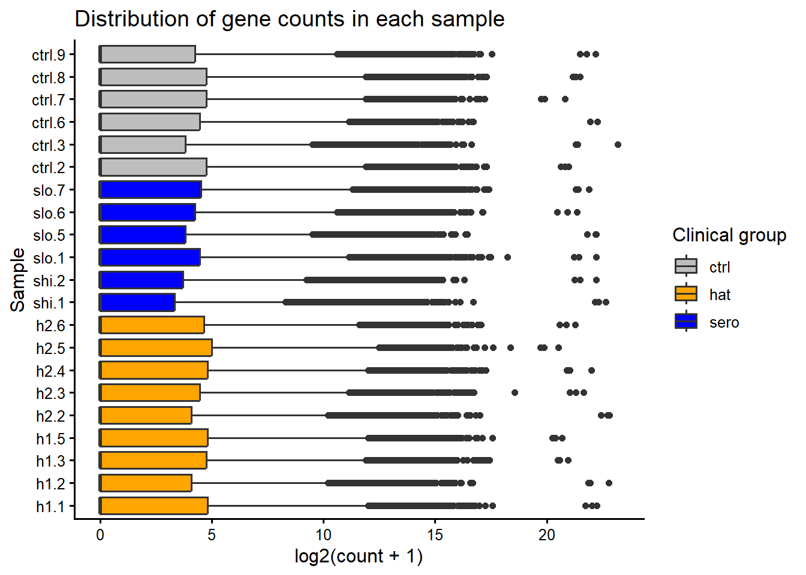
fill = status belongs inside aes() because fill represents a column in the data.
Make sure to save your improved count_distribution_plot:
ggsave(
filename = "/count_distributions_per_sample.png",
plot = count_distribution_plot
)Warning in grDevices::dev.off(): agg could not write to the given file
TipTry it yourself: Write a figure legend
Write a concise figure legend for the count-distribution boxplot. Explain what each box represents, what has been transformed and what the colours identify.
TipPossible answer
Distribution of gene counts in each RNA-seq sample. Each box summarises the distribution of log2(count + 1) values across genes in one sample. Box fill colour indicates the clinical group.
9.9 Improve the sample-distance heatmap
The sample-distance heatmap already uses scale_fill_viridis_c(). A heatmap uses fill to represent a continuous numerical value, so its plot legend is the equivalent of an axis and should have a meaningful title.
distance_plot <- ggplot(
distance_data,
aes(
x = sample_1,
y = sample_2,
fill = distance
)
) +
geom_tile() +
scale_fill_viridis_c() +
coord_equal() +
labs(
title = "Distances between HAT and SERO TL+ samples",
x = "Sample",
y = "Sample",
fill = "Euclidean distance"
) +
theme_classic(base_size = 12) +
theme(
axis.text.x = element_text(angle = 45, hjust = 1)
)
distance_plot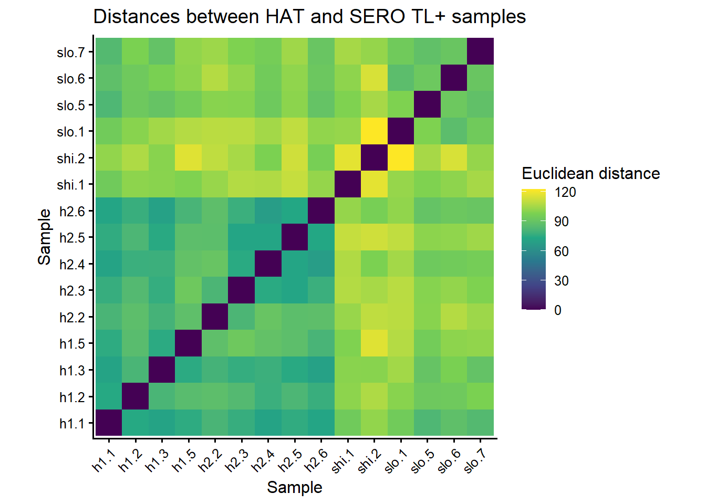
TipTry it yourself: compare accessible colour scales
Try at least two of these viridis options by changing only the fill-scale line:
scale_fill_viridis_c(option = "A") # magma
scale_fill_viridis_c(option = "B") # inferno
scale_fill_viridis_c(option = "C") # plasma
scale_fill_viridis_c(option = "D") # viridis
scale_fill_viridis_c(option = "E") # cividisWith these other Viridis scales:
- Can you distinguish low, intermediate and high distances?
- Is the diagonal easy to identify?
- Does the palette remain readable when the figure is small?
- Does the plot legend clearly explain what the colours mean?
Keep the option that you believe makes the ordered distances easiest to read in the final output.
TipTry it yourself: Write a figure legend
Write a concise figure legend for the sample-distance heatmap. Explain what each tile represents, what the fill colour means and how to interpret smaller and larger distances.
TipPossible answer
Distances between HAT and SERO TL+ expression profiles. Each tile shows the Euclidean distance between a pair of samples calculated from variance-stabilised gene-expression values. The fill scale represents the distance, with smaller values indicating more similar expression profiles.
9.10 Improve the PCA plot
The PCA is useful for explaining how to map a data column to colour because the clinical group is not already shown on an axis.
pca_plot <- ggplot(
pca_data,
aes(
x = PC1,
y = PC2,
colour = group,
shape = group
)
) +
geom_point(size = 4) +
scale_colour_manual(
values = c(
sero = "blue",
hat = "orange"
)
) +
labs(
title = "PCA of HAT and SERO TL+ expression profiles",
x = paste0("PC1 (", pc1_percent, "%)"),
y = paste0("PC2 (", pc2_percent, "%)"),
colour = "Clinical group",
shape = "Clinical group"
) +
theme_classic(base_size = 12)
pca_plot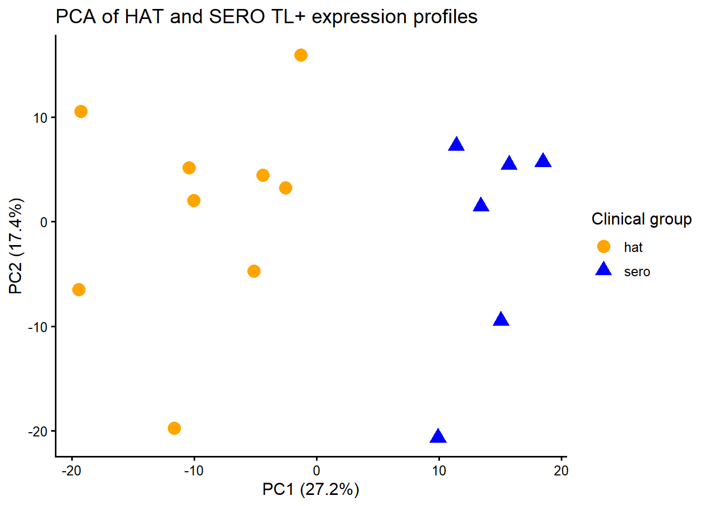
The plot uses four aesthetic mappings:
x = PC1maps PC1 to horizontal positiony = PC2maps PC2 to vertical positioncolour = groupmaps clinical group to point colourshape = groupmaps clinical group to point shape
Because colour = group is inside aes(), colour represents a column in the data and ggplot2 creates a plot legend. scale_colour_manual() then specifies which colour represents each group.
By contrast, size = 4 is outside aes() because it is a fixed setting applied to every point.
Because colour and shape are mapped to group, they vary between clinical groups and appear in the plot legend.
Because size is set to 4, every sample has the same point size and no separate size legend is created.
Save the Revised PCA Plot
Make sure to save the revised PCA plot:
ggsave(
filename = "figures/PCA_sero_hat.png",
plot = pca_plot
)
TipTry it yourself: Write a figure legend
Write a concise figure legend for the PCA plot. Explain what each point represents, what the axes show and what colour and shape represent, if both are used.
TipPossible answer
Principal component analysis of HAT and SERO TL+ expression profiles. Each point represents one sample positioned according to its variance-stabilised gene-expression profile. The axis labels show the percentage of variation explained by PC1 and PC2. Point colour and shape identify the clinical group.
9.11 Improve the volcano plot
The volcano plot contains thousands of genes, so clarity depends on restraint. Larger points can help, but points that are too large will hide the density of the data:
volcano_plot <- ggplot(
plot_de,
aes(
x = log2FoldChange,
y = minus_log10_padj,
colour = direction
)
) +
geom_point(size = 1.5) +
geom_vline(
xintercept = c(-1, 1),
linetype = "dashed",
colour = "grey40"
) +
geom_hline(
yintercept = -log10(0.05),
linetype = "dashed",
colour = "grey40"
) +
scale_colour_manual(
values = c(
"Below thresholds" = "grey",
"Higher in HAT" = "orange",
"Higher in SERO TL+" = "blue"
)
) +
labs(
title = "Differential expression: HAT versus SERO TL+",
x = "Log2 fold change (HAT versus SERO TL+)",
y = "-log10 adjusted p-value",
colour = "Result category"
) +
theme_classic(base_size = 12)
volcano_plot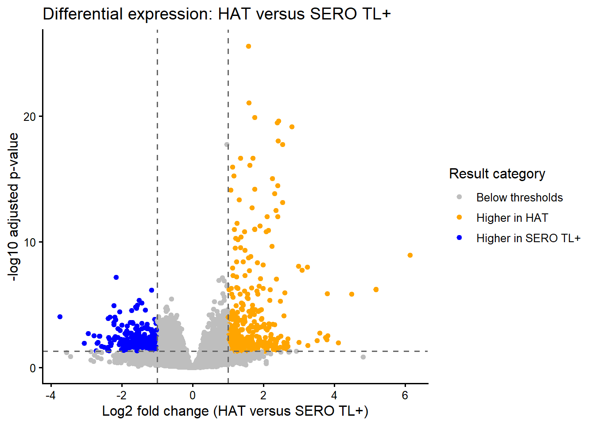
9.11.1 Labelling points
The volcano plot shows thousands of genes, but it does not currently identify individual genes.
We could add a label to every point, but the labels would overlap and make the figure difficult to read. Instead, we will label a small number of genes selected using a clear rule.
Here, we will label the five genes with the smallest adjusted p-values among those that pass both thresholds.
9.11.1.1 Select genes that pass both thresholds
When we constructed the data for the volcano plot, the direction column identified genes that are:
"Higher in HAT";"Higher in SERO TL+";"Below thresholds".
For labelling the volcano plot, we filter down to the genes with the lowest adjusted p value. First, we use subsetting and indexing to keep only genes that are not in the "Below thresholds" category:
label_candidates <- plot_de[
plot_de$direction != "Below thresholds",
]Some genes may not have an available gene symbol so we’ll remove these before creating the labels:
label_candidates <- label_candidates[
!is.na(label_candidates$symbol) &
label_candidates$symbol != "",
]
head(label_candidates) gene_id baseMean log2FoldChange lfcSE stat pvalue
31 ENSG00000003096 8.127210 -1.623386 0.4882842 -3.324674 8.852189e-04
38 ENSG00000003436 4.791048 -1.742244 0.6069785 -2.870355 4.100108e-03
84 ENSG00000005249 152.164598 -1.120775 0.3638684 -3.080164 2.068863e-03
121 ENSG00000006453 13.350424 -1.029211 0.3183930 -3.232516 1.227052e-03
157 ENSG00000007312 6600.644343 2.143930 0.2793909 7.673583 1.672568e-14
226 ENSG00000010278 344.751943 -1.336675 0.2537273 -5.268155 1.378016e-07
padj symbol minus_log10_padj direction
31 1.742416e-02 KLHL13 1.758848 Higher in SERO TL+
38 4.700661e-02 TFPI 1.327841 Higher in SERO TL+
84 3.060004e-02 PRKAR2B 1.514278 Higher in SERO TL+
121 2.168371e-02 BAIAP2L1 1.663866 Higher in SERO TL+
157 1.209914e-11 CD79B 10.917245 Higher in HAT
226 2.596808e-05 CD9 4.585560 Higher in SERO TL+label_candidates now contains the genes that:
- pass the adjusted p-value and fold-change thresholds;
- have a gene symbol that can be displayed.
9.11.1.2 Select five genes
Sort the candidate genes by adjusted p-value:
label_candidates <- label_candidates[
order(label_candidates$padj),
]The genes with the smallest adjusted p-values are now at the top of the data frame.
#Keep the first five rows of label_candidates
label_genes <- head(label_candidates,5)The five genes are selected using a reproducible rule rather than chosen because they look interesting on the finished plot.
Another valid rule might be to label genes with the largest absolute fold changes. Whichever rule is used should be stated in the figure legend.
9.11.1.3 Add labels with ggrepel
The ggrepel package provides the geom_label_repel() function. It works like geom_label() but attempts to move labels away from one another and from the points they identify (ggplot text labels repel each other).
To make the labels clearer on the plot:
colour = "black"fixes the label text colourto blackfill = "white"gives every label a white background so that it remains readable over the coloured points
volcano_plot <- volcano_plot +
geom_label_repel(
data = label_genes,
aes(label = symbol),
colour = "black",
fill = "white",
size = 3.5,
show.legend = FALSE
)
volcano_plot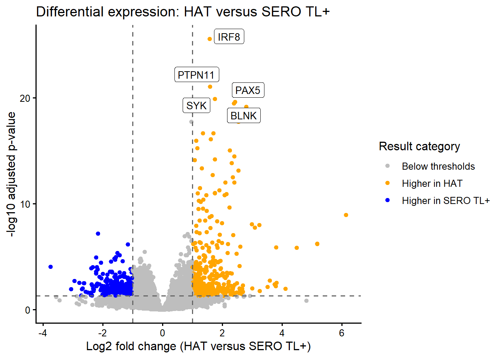
This new layer uses:
data = label_genesThis means that labels are added only for the five rows in label_genes. The points in the original volcano plot are unaffected.
The following mapping tells ggplot2 what text to display:
aes(label = symbol)Each selected point is labelled using the value in its symbol column.
The x- and y-axis mappings do not need to be repeated. The label layer inherits these from the original volcano_plot:
x = log2FoldChange
y = minus_log10_padjTherefore, each label is placed near the point representing the same gene.
The remaining arguments control the appearance of the labels:
size = 3.5controls the text size;show.legend = FALSEprevents the text layer from adding another entry to the plot legend.
Unlike geom_text() or geom_label(), geom_label_repel() attempts to move labels apart and adds small connecting lines where needed. This makes a small number of labels easier to read.
ImportantLabels should improve the figure
Adding more labels does not always add more information. Too many labels can cover the points and make the overall pattern difficult to see.
Use a small number of labels, state how they were selected and check that they remain readable at the final figure size.
Make sure to save your revised figure:
ggsave(
filename = "figures/volcano_hat_vs_sero_labelled.png",
plot = volcano_plot
)
TipTry it yourself: Write a figure legend
Write a concise figure legend for the volcano plot. Explain what each point represents, the direction of fold change, what the colours represent, the thresholds shown by the dashed lines and how the labelled genes were selected.
TipPossible answer
Differential expression between HAT and SERO TL+ samples. Each point represents one gene. Positive log2 fold changes indicate higher estimated expression in HAT, while negative values indicate higher estimated expression in SERO TL+. Colours identify genes above and below the adjusted p-value and absolute log2 fold-change thresholds. Dashed lines show an adjusted p-value of 0.05 and log2 fold changes of -1 and 1. The five labelled genes have the smallest adjusted p-values among genes passing both thresholds.
9.12 Saving figures with specific dimensions
Until now, we have allowed ggsave() to choose the dimensions of the saved figure:
ggsave(
filename = "figures/pca_plot.png",
plot = pca_plot
)We can make the output more predictable by specifying its width and height. The examples below use inches as it is the default for ggplot but you can use centimetres by setting units = “cm” and supplying centimetre dimensions. These values also determine the figure’s aspect ratio, which is its shape.
Compare aspect ratios
Save the PCA plot three times using different dimensions:
ggsave(
filename = "figures/pca_wide.png",
plot = pca_plot,
width = 10,
height = 5,
units = "in"
)
ggsave(
filename = "figures/pca_tall.png",
plot = pca_plot,
width = 5,
height = 10,
units = "in"
)
ggsave(
filename = "figures/pca_square.png",
plot = pca_plot,
width = 6,
height = 6,
units = "in"
)Open the figures folder in Windows File Explorer or macOS Finder, then compare the three files.
- Which dimensions make the PCA pattern easiest to interpret?
- What happens to the apparent distance between points?
- Which version gives enough space to the axes, title and plot legend?
- Does any version make the plot feel compressed or stretched?
WarningDimensions affect interpretation
The data have not changed, but the shape of the plotting area has. An unsuitable aspect ratio can make distances and patterns appear compressed or stretched. For a PCA plot, similar width and height are usually a sensible starting point because distances in both directions are important.
TipTry it yourself: Choose dimensions for your figures
Return to the ggsave() code for each of your figures and add width, height and units.
Choose dimensions that make the figure’s main message clear and keep the title, axes, labels and plot legend easy to read.
ggsave(
filename = "figures/your_figure.png",
plot = your_plot,
width = ...,
height = ...,
units = "in"
)Open each file in Windows File Explorer or macOS Finder. Adjust the width and height if the figure looks crowded, compressed or unnecessarily spread out. There is no single correct size for every figure.
9.13 Summary
In this chapter, you:
- improved figures in your existing analysis script
- identified the data, aesthetic mappings and geometry in a
ggplot2figure - used a single-gene plot to practice axes, points, jitter, layers and labels
- introduced colour mapping on the PCA, where colour adds new information
- added informative titles, axis labels and plot-legend titles
- compared built-in themes
- improved a bar chart, boxplot, heatmap, PCA and volcano plot
- labelled a small, reproducibly selected set of genes on the volcano plot
- wrote concise figure legends
- saved figures at dimensions suited to their content
The aim is not to decorate figures. It is to make the data, comparison and uncertainty easier for another person to understand.
9.14 Optional extra activities
You have now completed the required activities for this chapter. The remaining section is an optional, but valuable challenge for further practice. You can attempt it now or return to it later.
TipOptional Activity 1: label samples on the PCA plot
The points in the PCA plot represent individual samples. Colour and shape help us identify the clinical groups, but they do not tell us which sample is represented by each point.
Adding sample labels can help us:
- identify a sample that is separated from the others;
- investigate possible outliers;
- connect unusual PCA positions to the earlier quality-control plots;
- check whether technical or biological information might explain the pattern.
Labels may not be useful in a final figure because they can make the plot crowded. However, they can be valuable while exploring and checking the data.
9.14.1 Find the sample-name column
First, inspect the PCA data:
head(pca_data) PC1 PC2 group name status detailed_status sex age sizeFactor
h1.1 -2.513838 3.212397 hat h1.1 hat hat_p1 m 34 1.3160031
h1.2 -5.106731 -4.744300 hat h1.2 hat hat_p1 m 30 0.8026352
h1.3 -10.399706 5.127919 hat h1.3 hat hat_p1 m 20 1.3322955
h1.5 -1.291619 15.946455 hat h1.5 hat hat_p1 m 18 1.4069008
h2.2 -11.608873 -19.731890 hat h2.2 hat hat_p2 m 24 0.8081270
h2.3 -19.429536 -6.509725 hat h2.3 hat hat_p2 m 40 1.0714426
replaceable
h1.1 TRUE
h1.2 TRUE
h1.3 TRUE
h1.5 TRUE
h2.2 TRUE
h2.3 TRUEThe pca_data object contains one row for each sample. The sample IDs are stored in the name column.
We can check them directly:
pca_data$name [1] "h1.1" "h1.2" "h1.3" "h1.5" "h2.2" "h2.3" "h2.4" "h2.5" "h2.6"
[10] "shi.1" "shi.2" "slo.1" "slo.5" "slo.6" "slo.7"9.14.2 Add the sample labels
The ggrepel package provides geom_label_repel(). We used this function to add gene labels to the volcano plot. We can use the same approach to label samples on the PCA.
pca_plot_labelled <- pca_plot +
geom_label_repel(
aes(label = name),
colour = "black",
fill = "white",
size = 3,
show.legend = FALSE
)
pca_plot_labelled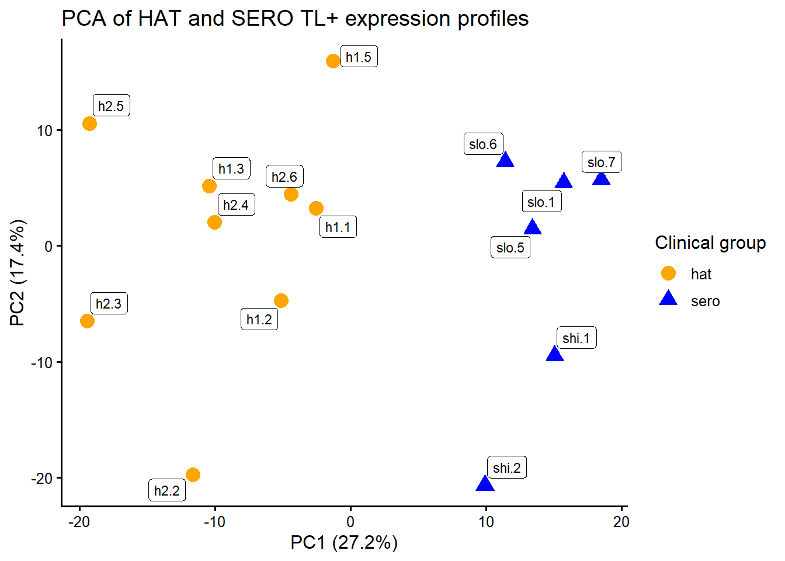
The following mapping tells ggplot2 which text to display:
aes(label = name)Each point is labelled using the sample ID in the name column.
Unlike the volcano plot, we do not need to provide a separate data frame using data =. We want to label every sample, so geom_label_repel() uses all the rows in pca_data.
The remaining arguments control the appearance of the labels:
colour = "black"makes the label text black;fill = "white"gives each label a white background;size = 3controls the text size;show.legend = FALSEprevents the label layer from adding another entry to the plot legend.
geom_label_repel() attempts to move overlapping labels apart. It may also draw small connecting lines between labels and their points.
NoteUse the labelled plot to investigate samples
Look for samples that:
- are positioned far from other samples in the same group;
- are positioned between the clinical groups;
- appear unusual in both the PCA and earlier quality-control figures.
An unusual PCA position does not automatically mean that a sample should be removed. It identifies a sample that may be worth investigating further.
Return to the total-count and count-distribution plots and check whether the same sample also has an unusual library size or count distribution.
9.14.3 Completed code
The complete labelled PCA can be created with:
pca_plot_labelled <- ggplot(
pca_data,
aes(
x = PC1,
y = PC2,
colour = group,
shape = group
)
) +
geom_point(size = 4) +
geom_label_repel(
aes(label = name),
colour = "black",
fill = "white",
size = 3,
show.legend = FALSE
) +
scale_colour_manual(
values = c(
sero = "blue",
hat = "orange"
)
) +
scale_shape_manual(
values = c(
sero = 16,
hat = 17
)
) +
labs(
title = "PCA of HAT and SERO TL+ expression profiles",
x = paste0("PC1 (", pc1_percent, "%)"),
y = paste0("PC2 (", pc2_percent, "%)"),
colour = "Clinical group",
shape = "Clinical group"
) +
theme_classic(base_size = 12)
pca_plot_labelled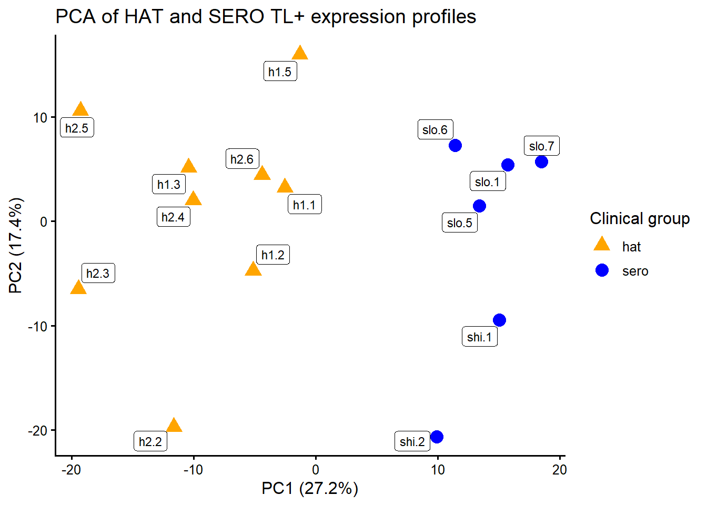
ImportantDecide whether the labels help
The labelled PCA is useful for exploring the data, but it may not be the clearest version for a report or presentation.
Compare pca_plot and pca_plot_labelled. Use the labelled version to identify samples during quality control but use the unlabelled version if the labels obscure the overall PCA pattern.
If you want to save the labelled version separately:
ggsave(
filename = "figures/PCA_sero_hat_labelled.png",
plot = pca_plot_labelled
)
TipOptional Activity 2: Create your own theme
Built-in themes provide a quick way to change the overall appearance of a plot. You can also create your own theme to control specific features, such as the size, colour and alignment of text.
In this worked example, we will customise the total-count plot but the theme you build can be applied to all your figures.
Start with a built-in theme
First, apply a built-in theme to control the general appearance:
read_plot +
theme_classic(base_size = 12)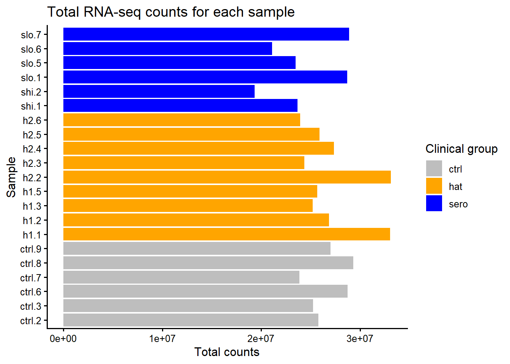
We can then use theme() to modify individual parts of the plot.
read_plot +
theme_classic(base_size = 12) +
theme(
plot.title = element_text(
size = 16,
face = "bold"
),
axis.title = element_text(
size = 12,
face = "bold"
),
axis.text = element_text(
size = 10
),
legend.title = element_text(
size = 11,
face = "bold"
)
)The theme() function controls the supporting elements of a plot, such as:
- the title;
- axis titles;
- axis labels;
- legend text;
- grid lines;
- the plot background.
It does not change the data, mappings or geometries.
Inside theme(), we identify the part of the plot that we want to change:
plot.title
axis.title
axis.text
legend.titleelement_text() describes how a text element should appear. Some useful arguments are:
element_text(
size = 14,
face = "bold",
colour = "navy",
hjust = 0.5
)Here:
sizecontrols the text size;facecan be"plain","bold"or"italic";colourchanges the text colour;hjustcontrols horizontal alignment.
For a plot title, hjust = 0 places the title on the left, while hjust = 0.5 centres it.
Storing a custom theme
If the same formatting will be used on several plots, it can be stored as an object:
my_theme <- theme(
plot.title = element_text(
size = 16,
face = "bold",
hjust = 0.5
),
axis.title = element_text(
size = 12,
face = "bold"
),
axis.text = element_text(
size = 10
),
legend.title = element_text(
size = 11,
face = "bold"
)
)The object my_theme contains only the additional formatting choices. It does not contain any data or create a plot by itself.
Apply the built-in theme first, followed by the custom changes:
read_plot <- read_plot +
theme_classic(base_size = 12) +
my_theme
read_plot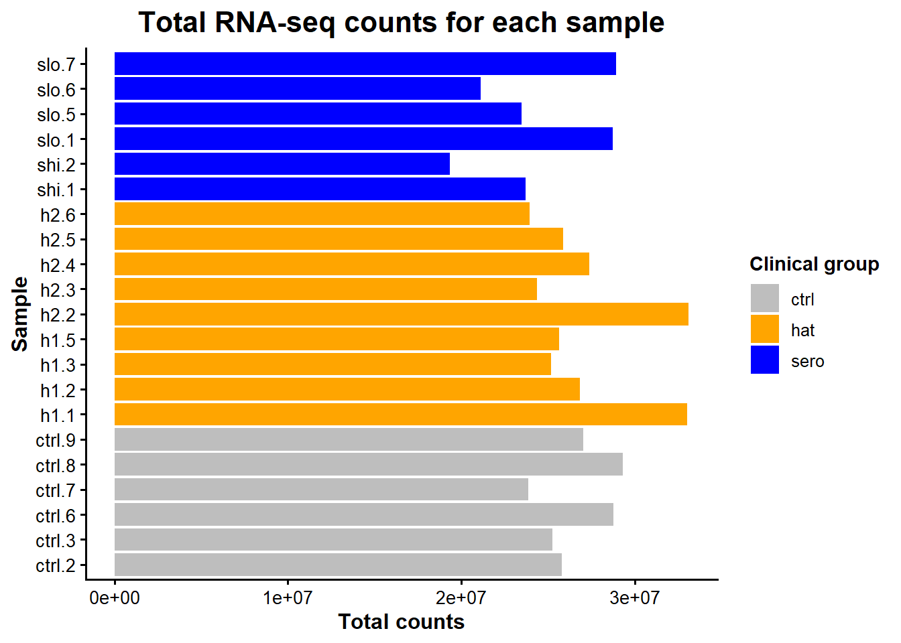
The order matters. If two themes change the same feature, the theme added last takes priority.
TipTry it yourself: Customise another plot
Apply theme_classic() and my_theme to pca_plot. Then modify at least one setting in my_theme. Save the result as pca_plot_custom.
TipPossible Solution
This example left-aligns the title and changes its colour:
pca_theme <- theme(
plot.title = element_text(
size = 16,
face = "bold",
colour = "navy",
hjust = 0
),
axis.title = element_text(
size = 12,
face = "bold"
),
axis.text = element_text(
size = 10
),
legend.title = element_text(
size = 11,
face = "bold"
)
)
pca_plot_custom <- pca_plot +
theme_classic(base_size = 12) +
pca_theme
pca_plot_custom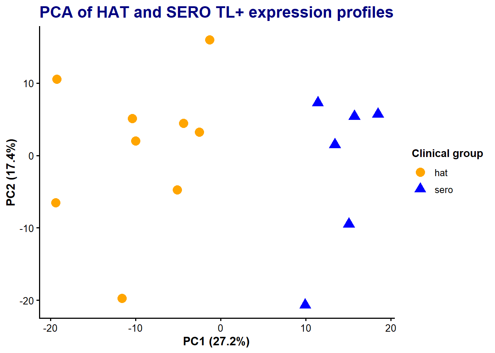
Your choices do not need to match this example. Check that the finished title, axes and legend remain clear and that the formatting does not distract from the PCA pattern.
TipOptional Activity 3: combine plots into a multi-panel figure
Individual plots are often combined into a multi-panel figure for a report, presentation or publication. Each panel may show a different type of data, but the plots should contribute to one overall message.
In this worked example, we will combine the total-count bar chart and count-distribution boxplot into a single sample quality-control figure.
Panels combine separate plot objects, which may use different data or different geometries.
Here, read_plot and count_distribution_plot are separate plot objects, so we will combine them as panels.
Install and load patchwork
We will use the patchwork package to arrange the plots. Install it once using install.packages("patchwork") if it is not already installed:
library(patchwork)
qc_panel <- (
read_plot + count_distribution_plot
) +
plot_layout(guides = "collect") +
plot_annotation(
title = "RNA-seq sample quality-control summaries",
tag_levels = "A"
) &
theme(legend.position = "bottom")Combine two related plots
The + operator places the two plot objects next to each other:
qc_panel <- read_plot + count_distribution_plot
qc_panel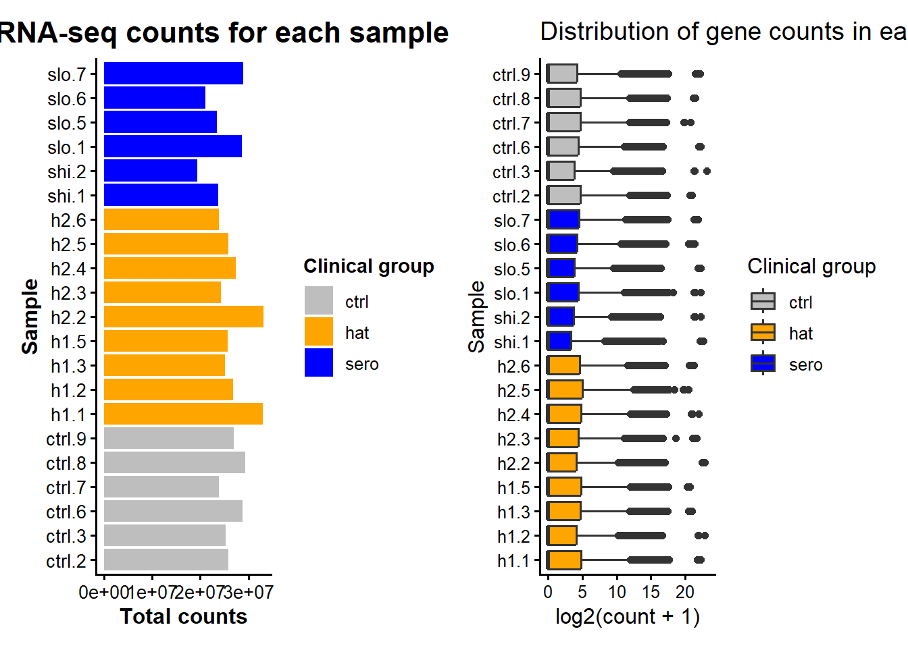
This works, but a finished multi-panel figure should also explain how the panels are related. We can add an overall title and automatic panel labels using plot_annotation():
qc_panel <- (
read_plot + count_distribution_plot
) +
plot_annotation(
title = "RNA-seq sample quality-control summaries",
tag_levels = "A"
)
qc_panel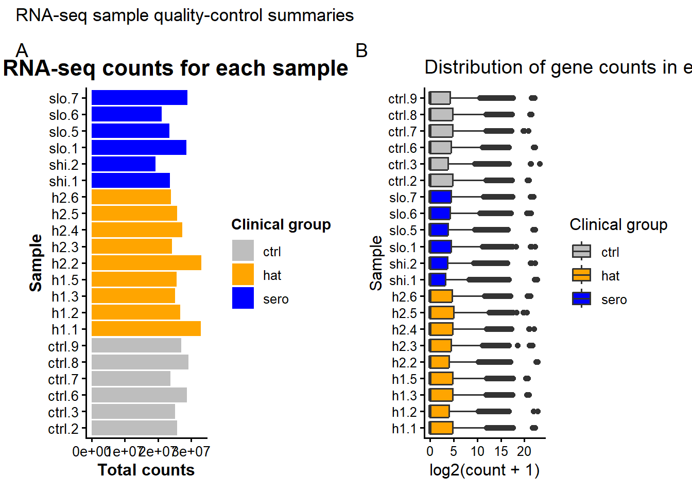
tag_levels = "A" adds the panel labels A and B automatically.
Collect repeated legends
Both plots use colour to represent the same clinical groups. Instead of showing the same legend twice, plot_layout() can collect the legends into one location:
qc_panel <- (
read_plot + count_distribution_plot
) +
plot_layout(guides = "collect") +
plot_annotation(
title = "RNA-seq sample quality-control summaries",
tag_levels = "A"
) &
theme(legend.position = "bottom")
qc_panel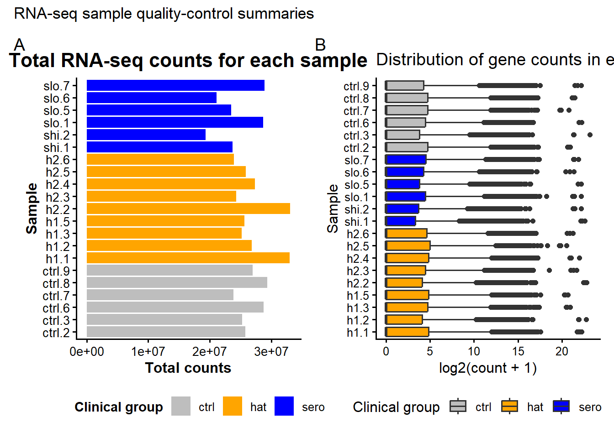
The & applies the theme modification to every plot in the patchwork.
Think about readability
Combining plots reduces the space available to each one. Before saving a combined figure, check:
- Are the sample names still readable?
- Are the axis labels large enough?
- Are the panel labels easy to find?
- Do colours have the same meaning in every panel?
- Does the shared legend describe both plots correctly?
- Would stacking the plots vertically provide more space?
If the sample labels are crowded, a vertical layout may be clearer:
qc_panel_vertical <- (
read_plot / count_distribution_plot
) +
plot_layout(guides = "collect") +
plot_annotation(
title = "RNA-seq sample quality-control summaries",
tag_levels = "A"
) &
theme(legend.position = "bottom")
qc_panel_vertical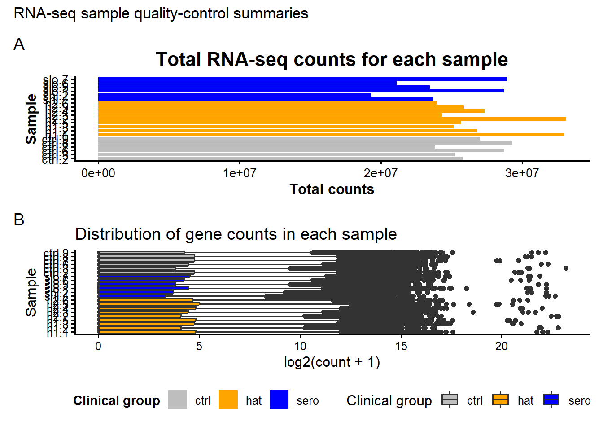
Which figure displays the information the best?
Save the combined figure
ggsave(
filename = "figures/sample_qc_panel.png",
plot = qc_panel,
width = 12,
height = 6,
dpi = 300
)A multi-panel figure should tell one coherent story. Only combine plots when their relationship is useful to the reader.